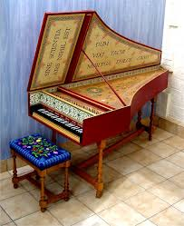

Ez egy billentyűs hangszer, melyben a billentyűk lenyomása következtében kis kalapácsok ütik meg a benne lévő húrokat.
Elődje a csembaló. Annak vékonyabb hangja volt, tollak ütötték meg a vékonyabb húrokat.
Szinte minden városban található egy-egy zeneiskola, pl.:Keszthely (Festetics György Zene Iskola), Tapolca (Járdányi Pál Zene Iskola).
Én a keszthelyiben tanultam 4 évig, de 6 éve zongorázom.
A fő tantárgy (tehát valamilyen hangszer) mellett ún. szolfézsra is kellett járni, hogy megtanuld az alapokat.
A zongorán egymás után vannak a hangok, növekvő sorrenben:C,Cisz,D,Disz,E,F,G,Gisz,A,Aisz,H,C'
.svg.png)